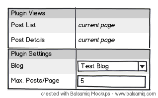
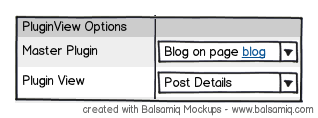
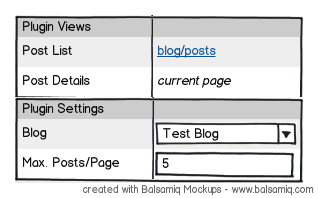

Story #40599
Work Package #45013: Flexible plugin integration (TODO: Reviews)
Include arbitrary Flow-Applications as Plugins
| Status: | Resolved | Start date: | 2013-03-26 | |
|---|---|---|---|---|
| Priority: | Should have | Due date: | 2013-04-20 | |
| Assigned To: | Marc Neuhaus | % Done: | 100% |
|
| Category: | Content Rendering | Spent time: | - | |
| Target version: | Sprint February 2013 | |||
| Story points | - | |||
| Velocity based estimate | - |
Description
As a content editor, I want to include an arbitrary Flow-Application inside a page.
Definition of done:
- FLOW3 packages should run as plugin inside the frontend
- we use the Blog package as example
- the controllers and most of the views should be re-used
{kind=link}
{kind=link}
{kind=link}
Subtasks
Related issues
History
#1 Updated by Sebastian Kurfuerst almost 3 years ago
- Subject changed from As a content editor, I want to include the Blog inside a page to [DISCUSS] As a content editor, I want to include the Blog inside a page
- Position deleted (
1) - Position set to 1
#2 Updated by Bastian Waidelich almost 3 years ago
Current Status¶
- Plugin TypoScript Object contains properties
package,subpackage,controller&action actionis the default action that is invoked when the plugin is called (if noPluginArgumentsspecify other (sub)package, controller and/or action)- There is currently no official way to link to Plugin actions on a different page (we currently use an AOP Aspect to solve this)
Ideas¶
- The Plugin TypoScript Object contains an (optional) PluginConfiguration and at least one PluginViewDefinitions
- The PluginSettings consists of arbitrary settings that are relevant to the plugin (e.g. max. number of posts per page)
- A PluginViewDefinition is configured globally (e.g. via YAML). It specifies
(sub)package(s),controller(s)andaction(s)that are part of a PluginView (e.g.PostController->showAction,PostController->deleteActionfor the Post Details PluginView). The first controller/action pair defines the default. Later, a PluginViewConfiguration might also define (non)cacheable actions etc. - The PluginView TypoScript Object references one PluginViewDefinition and a Plugin node (aka Master Plugin)
User Interface¶
When a plugin is inserted, the available PluginViews are displayed in the inspector panel:

As soon as at least one plugin with multiple PluginViewDefinitions is available, the user can insert PluginView Content Objects. A PluginView has to define Master Plugin node and the PluginViewDefinition it refers to:

When the user edits the Master Plugin instance again, the linked PluginViews are displayed in the inspector:

#3 Updated by Bastian Waidelich almost 3 years ago
- File PluginInspector_01.png added
- File PluginViewInspector_01.png added
- File PluginInspector_02.png added
#4 Updated by Sebastian Kurfuerst almost 3 years ago
Example for Form Builder: https://review.typo3.org/#/q/topic:formbuilder,n,z
#5 Updated by Sebastian Kurfuerst almost 3 years ago
- Subject changed from [DISCUSS] As a content editor, I want to include the Blog inside a page to As a content editor, I want to include the Blog inside a page
- Position deleted (
5) - Position set to 5
#6 Updated by Bastian Waidelich almost 3 years ago
See https://review.typo3.org/#/c/14390/ for a first WIP
#7 Updated by Sebastian Kurfuerst almost 3 years ago
- Target version changed from Sprint 10 (1.0 TP1) to Sprint February 2013
- Position deleted (
16) - Position set to 4
#8 Updated by Sebastian Kurfuerst almost 3 years ago
- Position deleted (
35) - Position set to 2
#9 Updated by Robert Lemke over 2 years ago
- Position deleted (
18) - Position set to 20
#10 Updated by Robert Lemke over 2 years ago
- Target version deleted (
Sprint February 2013) - Position deleted (
18) - Position set to 72
#11 Updated by Sebastian Kurfuerst over 2 years ago
- Category set to Content Rendering
- Assigned To set to Marc Neuhaus
- Target version set to Sprint February 2013
#12 Updated by Sebastian Kurfuerst over 2 years ago
- Subject changed from As a content editor, I want to include the Blog inside a page to Include arbitrary Flow-Applications as Plugins
#13 Updated by Marc Neuhaus over 2 years ago
Did some Prototyping during the CodeSprint in Lübeck:
https://review.typo3.org/#/c/18007/
https://review.typo3.org/#/c/18008/
https://github.com/mneuhaus/TYPO3.Plugin.Blog/commit/632dda20170e502006f60ebe565d8f2838f7f693
#14 Updated by Marc Neuhaus over 2 years ago
- Parent task set to #45013
#15 Updated by Gerrit Code Review over 2 years ago
Patch set 6 for branch master has been pushed to the review server.
It is available at https://review.typo3.org/19513
#16 Updated by Gerrit Code Review over 2 years ago
Patch set 7 for branch master has been pushed to the review server.
It is available at https://review.typo3.org/19513
#17 Updated by Gerrit Code Review over 2 years ago
Patch set 8 for branch master has been pushed to the review server.
It is available at https://review.typo3.org/19513
#18 Updated by Gerrit Code Review over 2 years ago
Patch set 9 for branch master has been pushed to the review server.
It is available at https://review.typo3.org/19513
#19 Updated by Gerrit Code Review over 2 years ago
Patch set 10 for branch master has been pushed to the review server.
It is available at https://review.typo3.org/19513
#20 Updated by Gerrit Code Review over 2 years ago
Patch set 11 for branch master has been pushed to the review server.
It is available at https://review.typo3.org/19513
#21 Updated by Gerrit Code Review over 2 years ago
Patch set 12 for branch master has been pushed to the review server.
It is available at https://review.typo3.org/19513
#22 Updated by Gerrit Code Review about 2 years ago
Patch set 13 for branch master has been pushed to the review server.
It is available at https://review.typo3.org/19513
#23 Updated by Bastian Waidelich over 1 year ago
- Status changed from New to Resolved